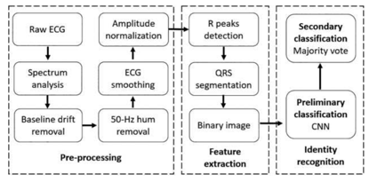
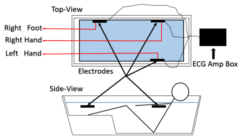

|
徐建波
副研究员
计算机科学与技术学院 |
研究兴趣：
信号处理 疾病检测 智慧医疗 健康保健 数据挖掘 机器学习 |
教育经历
• 2019-04至2022-03,日本会津大学,计算机与信息系统学,博士
• 2017-10至2019-03,日本会津大学,计算机与信息系统学,硕士
• 2010-09至2014-07,河南大学,网络工程,学士
工作经历
• 2022-04-至今，海南大学，计算机科学与技术学院，副研究员
招生简介
• 本人肩负探索人类未知领域之使命，科研任务繁忙。此生应该拿不到诺奖和院士，
也戴不上各种高、大、上的科研帽子（杰青、长江、大千人、万人…），毕竟我不是“科研界锦鲤”，
天生自带“开挂”属性的主角，我就是个普普通通的科研“打工人”（这点自知之明还是有的），
所以只探索自己感兴趣的领域（哪怕有些想法天马行空）。我这儿没有“躺平套餐”，只有“硬核挑战”。
要是你敢来，那咱们就一起“搞事情”，说不定还能搞出点大动静呢！
• 本人对科研持严肃态度，对组内学生的要求极为严格。包括：充满信仰（对大自然的心灵仰慕， 对未知领域的敬畏心情，对社会公正的内心追求，对美好人生的情感寄托）； 独立思考(具备批判性思维)；自由表达(鼓励原创思维而非随波逐流)； 追求真理（绝不容忍任何欺诈行为）；具有团队合作意识（如果连这点都不懂，以后怎么融入社会）； 知行合一、持之以恒（保证每天有5个小时以上的时间待在研究室，但国家法定节假日和寒暑假除外）；
• 对于加入课题组的学生，为了保证能全心科研，会尽力提供不低于国内平均水准的助研津贴： 硕士生不低于2万元/年，本科生不低于1万元/年，优秀学生有额外奖励。目前只招收本科生和研究生 (因为没有博士招生名额)。毕业最低要求:本科生要求1篇SCI、研究生要求2篇SCI。请慎重考虑。
• 另外，本人与日本东京大学、日本会津大学、日本九州大学、日本东北大学、香港中文大学、韩国首尔大学 等高校具有良好合作关系，优秀者可推荐前往读研、读博（世界那么大，你该去看看）。
• 如果你深思熟虑好了，那么欢迎对科学研究（人体生理信号处理、心脑血管疾病检测、智慧医疗、健康保健、大数据、 机器学习、深度学习等领域）感兴趣的本科生和研究生加入研究小组开展基础研究和应用研究。
• 本人对科研持严肃态度，对组内学生的要求极为严格。包括：充满信仰（对大自然的心灵仰慕， 对未知领域的敬畏心情，对社会公正的内心追求，对美好人生的情感寄托）； 独立思考(具备批判性思维)；自由表达(鼓励原创思维而非随波逐流)； 追求真理（绝不容忍任何欺诈行为）；具有团队合作意识（如果连这点都不懂，以后怎么融入社会）； 知行合一、持之以恒（保证每天有5个小时以上的时间待在研究室，但国家法定节假日和寒暑假除外）；
• 对于加入课题组的学生，为了保证能全心科研，会尽力提供不低于国内平均水准的助研津贴： 硕士生不低于2万元/年，本科生不低于1万元/年，优秀学生有额外奖励。目前只招收本科生和研究生 (因为没有博士招生名额)。毕业最低要求:本科生要求1篇SCI、研究生要求2篇SCI。请慎重考虑。
• 另外，本人与日本东京大学、日本会津大学、日本九州大学、日本东北大学、香港中文大学、韩国首尔大学 等高校具有良好合作关系，优秀者可推荐前往读研、读博（世界那么大，你该去看看）。
• 如果你深思熟虑好了，那么欢迎对科学研究（人体生理信号处理、心脑血管疾病检测、智慧医疗、健康保健、大数据、 机器学习、深度学习等领域）感兴趣的本科生和研究生加入研究小组开展基础研究和应用研究。
主要论文
# Corresponding author； * Equal contribution|
|
|

|
Impact of water temperature on heart rate variability during bathing
Jianbo Xu, Wenxi Chen. MDPI: Life [Paper] |
|
|
|
|

|
Convolutional neural network-based identity recognition using ECG at different water temperatures during bathing
Jianbo Xu, Wenxi Chen. Computers, Materials & Continua [Paper] |
|
|
|

|
ECG-based identity validation during bathing in different water temperature
Jianbo Xu, Peng Cui, Wenxi Chen. 42nd Annual International Conference of the IEEE Engineering in Medicine & Biology Society (EMBC) [Paper] |
|
|
|

|
Improvement of ECG based personal identification performance in different bathtub water temperature by CNN
Jianbo Xu, Tianhui Li, Peng Cui, Wenxi Chen. IEEE 10th International Conference on Awareness Science and Technology (iCAST) [Paper] |
|
|
|

|
The impact of bathtub water temperature on personal identification with ECG signal based on convolutional neural network
Jianbo Xu, Tianhui Li, Ying Chen, Wenxi Chen. IEEE 4th International Conference on Computer and Communications (ICCC) [Paper] |
|
|
|
|

|
Personal identification by convolutional neural network with ECG signal
Jianbo Xu, Tianhui Li, Ying Chen, Wenxi Chen. International Conference on Information and Communication Technology Convergence (ICTC) [Paper] |
|
|
项目经历
|
1. 2017/10 -- 2018/03 基于入浴期间心电图信号身份认证的可行性研究，日本校企合作项目，主持，结题。 2. 2018/04 -- 2018/09 基于高低水温环境下心电图信号身份认证的研究，日本校企合作项目，主持，结题。 3. 2019/04 -- 2019/09 基于循环神经网络(RNN)的身份认证研究，日本校企合作项目，主持，结题。 4. 2019/10 -- 2020/03 基于五种常用水温下身份认证系统的设计，日本校企合作项目，主持，结题。 5. 2020/04 -- 2020/09 基于不同水温下心率变异性分析，日本校企合作项目，主持，结题。 6. 2020/10 -- 2021/03 基于卷积神经网络的身份认证系统研究，日本校企合作项目，主持，结题。 7. 2019/04 -- 2021/03 基于深度学习的流体粒子的检测与分类，日本校企合作项目，主持，结题。 8. 2020/04 -- 2020/10 生理信号的实时搜集、去噪与特征提取，日本校企合作项目，主持，结题。 9. 2022/04 -- 2026/04 海南大学高层次人才科研启动基金，基于心电信号的身份识别研究，主持，在研。 10. 2022/08 -- 2024/08 海南大学自然科学类青年教师科研培育项目,基于热带环境下心率变异性研究，主持，结题。 11. 2023/01-- 2025/12 海南省自然科学基金青年基金项目,主持，在研。 |
主讲课程
| 2022-至今 | 计算机与人工智能基础 | 本科课程 |
| 2022-至今 | C++程序设计 | 本科课程 |
| 2022-至今 | 研究方法论 | 研究生课程 |
学术兼职
©徐建波
访问总数:
访客总数:
访问总数:
访客总数: